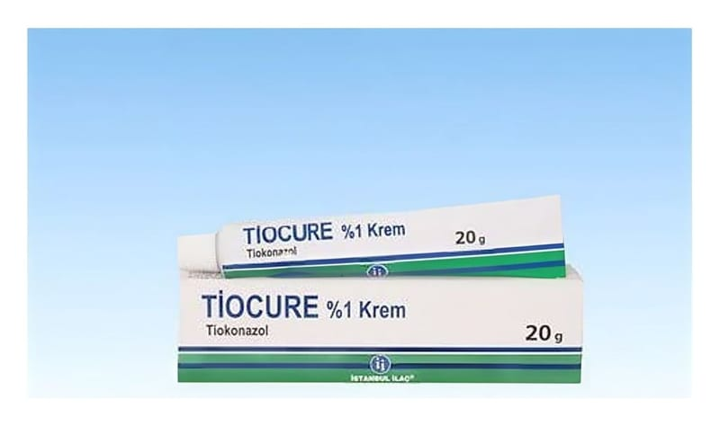

Tiocure %1 Krem, 20 Gram

Ne için kullanılır
KT · Bölüm 1TİOCURE beyaz renkli deri kremidir, tiokonazol etkin maddesini içerir. 20 g’lık alüminyum tüplerde sunulmaktadır.
TİOCURE, duyarlı mantarların sebep olduğu deri enfeksiyonlarının tedavisinde, bu arada bir mantar çeşidi olan Candida’ya bağlı ya da Candida ile komplike çocuk bezi pişiklerinin tedavisinde ve bunlara duyarlı gram-pozitif bakterilerin eklenmiş olduğu durumları tedavi etmek için kullanılır.
Ayaklarda görülen mantar enfeksiyonu (tinea pedis), gövde, kol, bacak ve kasıkların mantar infeksiyonu (tinea kruris/ korporis), deri yüzeyi mantarı (tinea versicolor) ve tırnak mantarı (tinea unguium) gibi enfeksiyonlar TİOCURE tedavisine iyi cevap verirler.